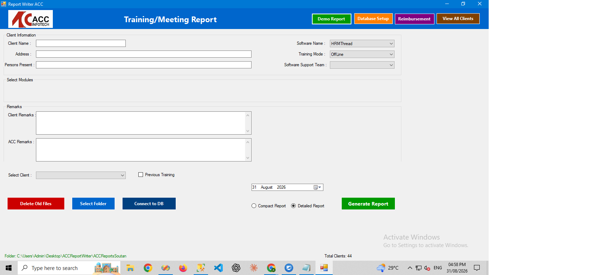
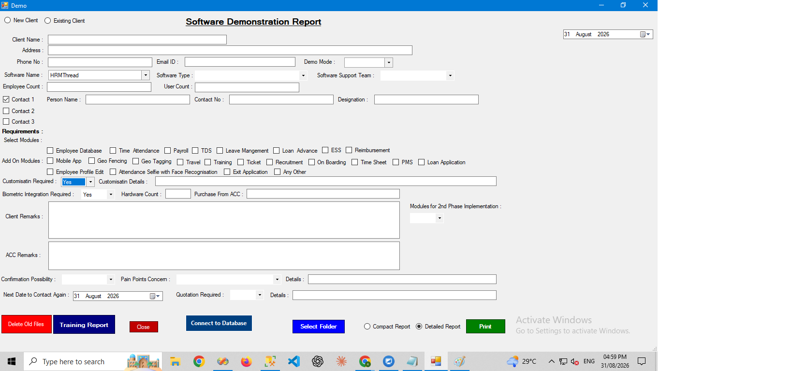
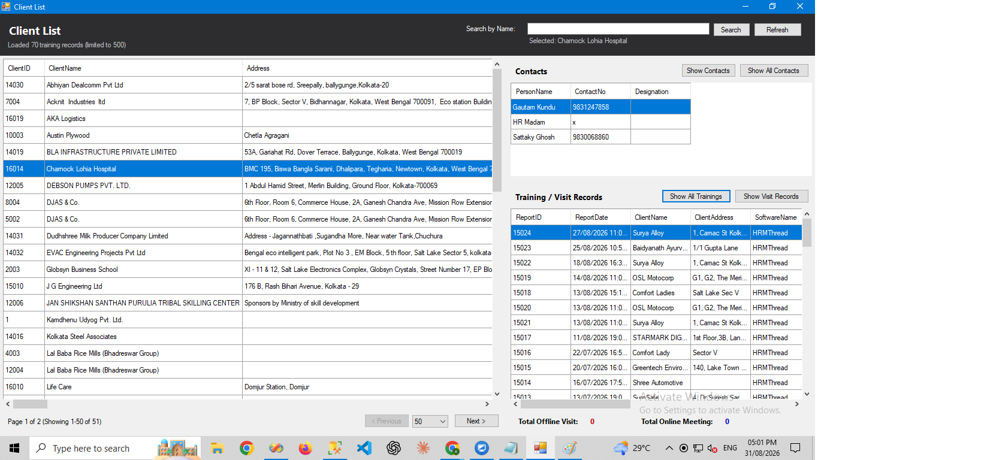

ACC CRM – Extended Edition
An extended, desktop version of the ACC Infotech CRM, rebuilt in VB.NET and SQL Server with a focus on customized report generation — letting staff configure and generate the specific client, sales, and activity reports they need instead of relying on a fixed report set.
Features
- Client and lead management backed by SQL Server
- Customizable report builder for client, sales, and activity reports
- Report export to PDF and Excel
- Sales pipeline and workflow tracking carried over from the original CRM concept
Screenshots



Technologies Used
VB.NET, MS SQL Server, Windows Forms, Crystal Reports
Challenges & Learnings
The main challenge was designing a report-generation layer flexible enough to cover multiple report types without a rigid, one-report-per-form structure — building a reusable reporting core that different report layouts could plug into, rather than duplicating logic per report.